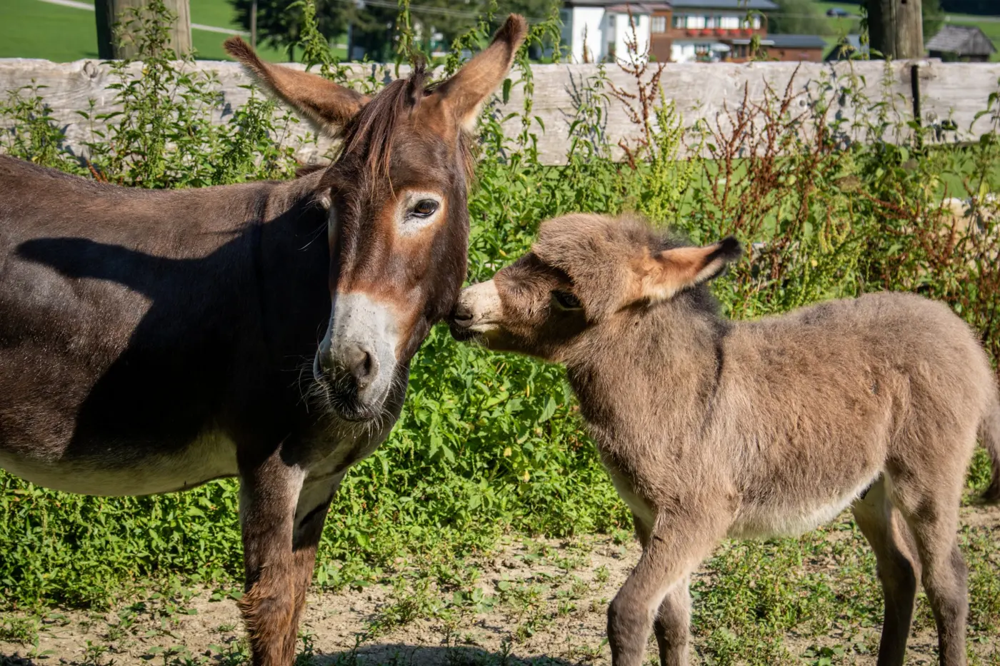
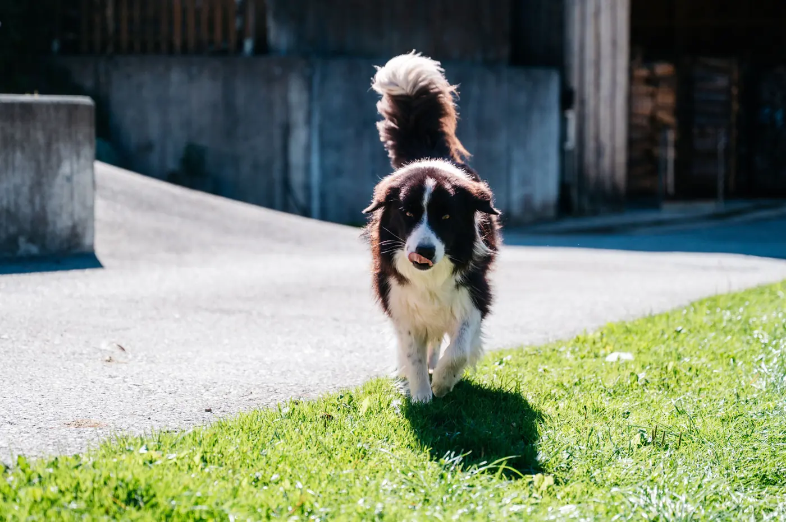
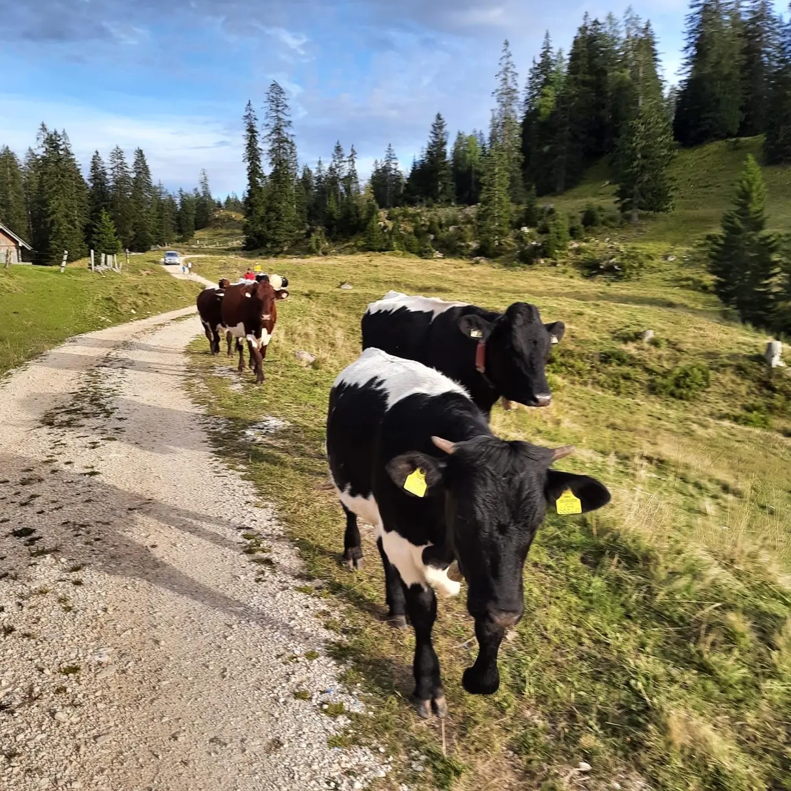
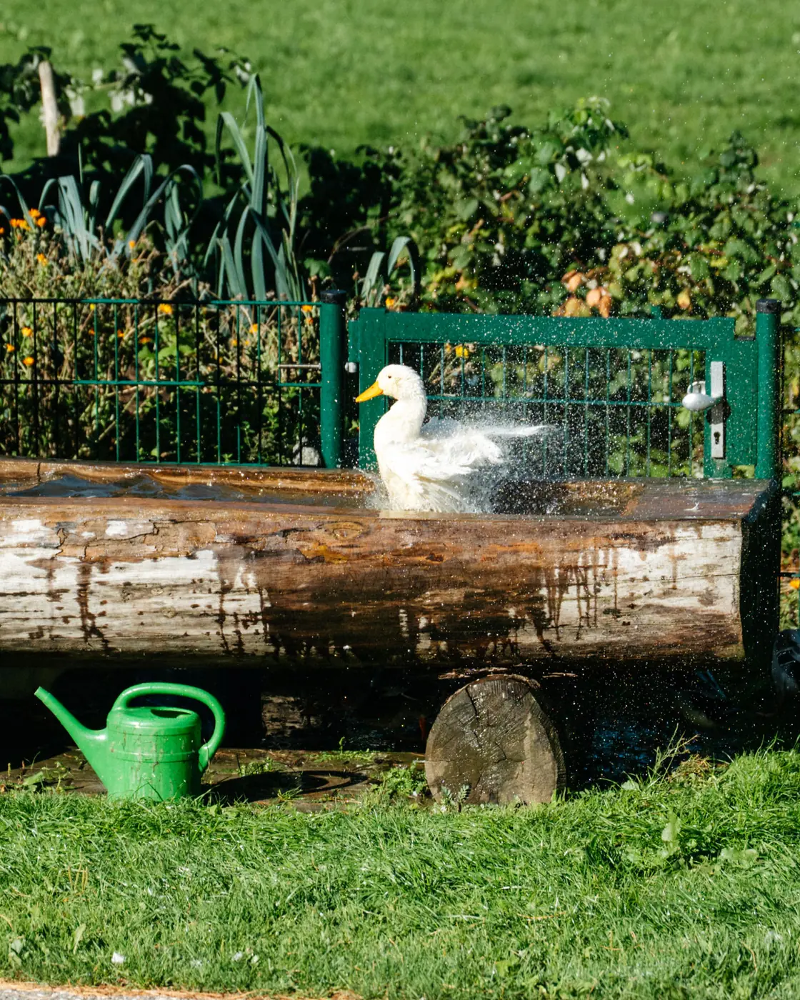

Oslice
Emma a Marie
Ahoj, my jsme Emma a Marie! Jsme nerozlučné a moc rády se necháme podrbat za ušima.
Víš, že…? Osli si pamatují obličeje celé roky. Možná tě příště poznáme!
Almromantik › Naše zvířata
Naše zvířata
Osli, poníci, krávy, ovce, pes, kočka a kachny: seznam se s našimi zvířaty ještě před dovolenou!

Tady se vám naše zvířata sama představí. Přečtěte si s maminkou nebo tatínkem, kdo je kdo, a pak je hledejte u nás na farmě. Úplně dole na vás čeká hledací hra!

Oslice
Ahoj, my jsme Emma a Marie! Jsme nerozlučné a moc rády se necháme podrbat za ušima.
Víš, že…? Osli si pamatují obličeje celé roky. Možná tě příště poznáme!

Kobyla
Já jsem Bella. Poznáš mě podle bílého pruhu v hřívě?
Víš, že…? Koně umí spát vestoje.

Mini shetlandští poníci
My jsme Maggy a Malý Hrom (Kleiner Donner): malí, chlupatí a zvědaví. Malý Hrom nejraději dovádí se psem Sky!
Víš, že…? Shetlandští poníci pocházejí z ostrovů na dalekém severu Skotska.

Pes farmy
Haf! Já jsem Sky a hlídám celou farmu. Můj nejlepší kamarád na hraní je Malý Hrom.
Víš, že…? Psi cítí pachy mnohotisíckrát lépe než my lidé.

Pinzgavské krávy
Bú! My jsme velké pinzgavské krávy. Naše telata zůstávají u nás, dokud nevyrostou.
Víš, že…? V létě putujeme nahoru na horskou pastvinu, kousek od naší horské chaty.

Valašské černonosé ovce
Bé! S černými nosy a hustou vlnou vypadáme jako plyšáci.
Víš, že…? Naše plemeno ovcí pochází z hor Wallisu ve Švýcarsku.
Kočka
Mňau, já jsem Freddy, černobílý jako fotbalový míč. Mám rád pohodlí a klid.
Víš, že…? Kočky spí až 16 hodin denně.

Indické běžci
Kvák! My nelétáme, my cupitáme, a to pěkně vzpřímeně.
Víš, že…? Indičtí běžci neumí létat, zato běhají pěkně rychle.

V létě jsou naše zvířata venku na pastvině a krávy dokonce nahoře na horské pastvině, kde jsou sousedy naší horské chaty.

V zimě bydlí zvířata v teplé stáji a každý den se krmí. Děti i dospělí můžou jít s námi do stáje – stačí říct Heike nebo Martinovi.
Odškrtni každé zvíře, které jsi u nás na farmě viděl.
🎉 Skvělé, našel jsi všechny! Pověz to Heike nebo Martinovi.
Volné termíny, výpočet ceny a okamžitá rezervace.